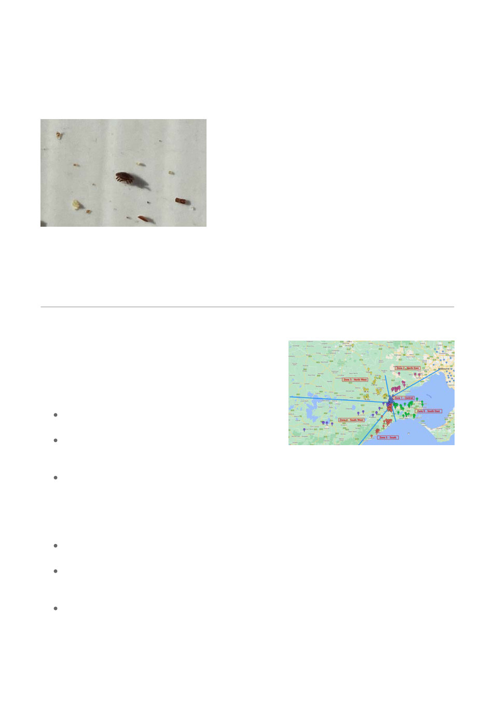

Zoomed section of an iPhone photo
showing a varroa mite lying on its
side. This was less obvious with the
naked eye than five other mites lying
flat on the surface.
If you think you have found varroa and want confirmation, transfer a sample to methylated spirits or
onto paper towel and get it identified. Mites in a wash can be easily filtered by pouring the wash
liquid through a paper towel. Mites on a board can be transferred to towel with the pointed blade of
a sharp knife, or by dabbing with a finger and then wiping off onto the paper towel. Bring your
sample to a meeting or ask for help through your zone coordinator.
The first time you find varroa in your hives, you should notify Agriculture Victoria as it remains a
notifiable pest.
Members Area Zones
Our Zones are NORTH WEST, NORTH EAST, CENTRAL
North, CENTRAL South, SOUTH WEST and EAST. We
encourage members to actively participate in their Zone
where members can get help and offer help to other
members.
Some Zones organise various activities such as
shared hive openings or workshops.
With the arrival of Varroa, we believe Zones will be
become more important in helping members share
resources, ideas, treatments and help.
Zone leaders can only contact members who agree to be contacted.
If you would like to be involved in Zone activities, update your profile "Share with leader"
section.
"Members near you" link will (subject to conditions**) show your location in the centre of a map as
well as other member locations near you.
If other members have agreed to share their contacts, those details will be shown when you
hover over an icon.
** To be able to view the approximate locations of other members hives, you will need to
agree to show the location of your own hives. Update your profile and click 'Yes' for the "Show
my hive location" option.
To be able to see the contact details of other members who have shared their details, you will
also need to share your details. Update your profile and enter your telephone and/or email in
the "Show these contact details" field.
After changing your profile and saving, you will need to logout and then log back in again for the change
to be active.